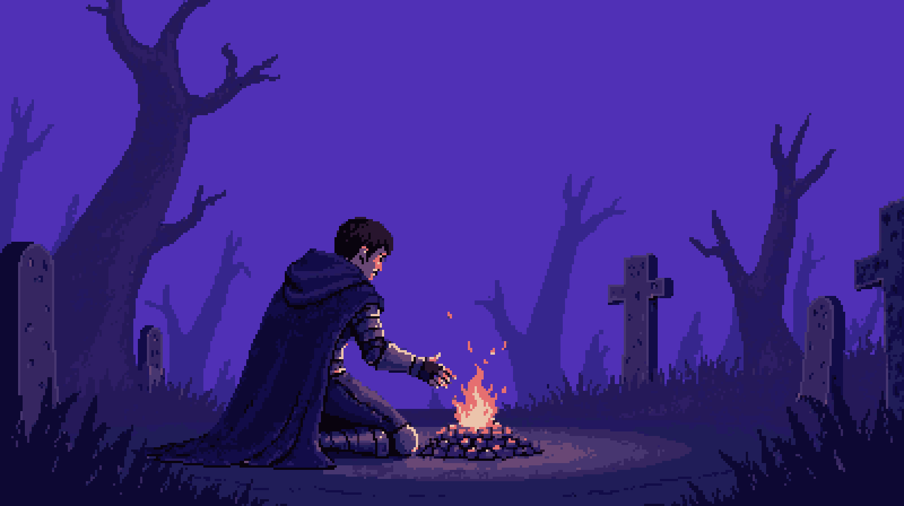
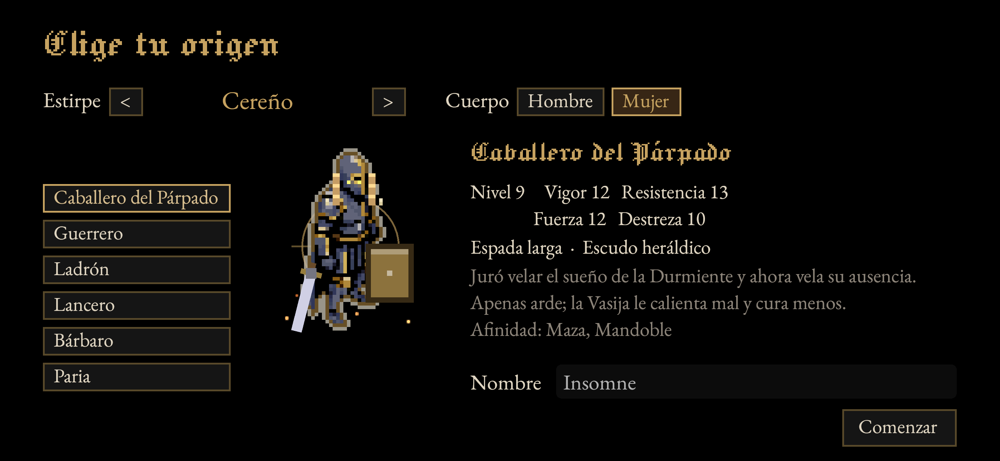
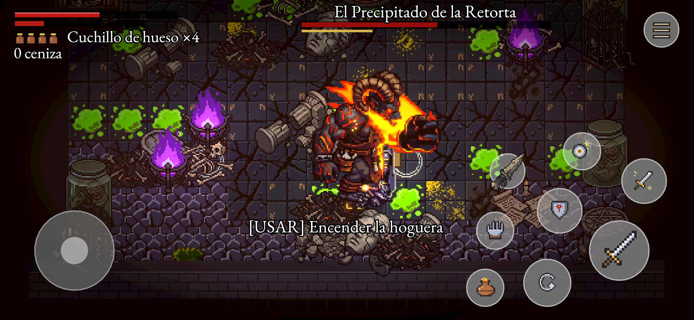
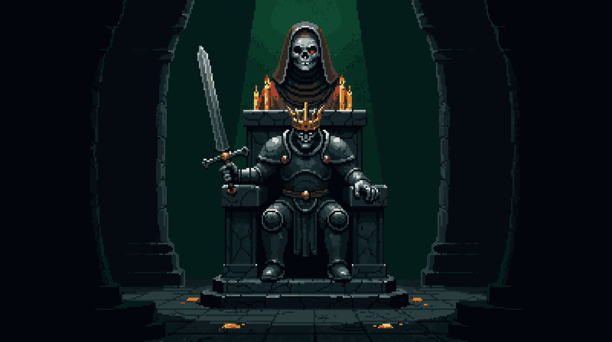
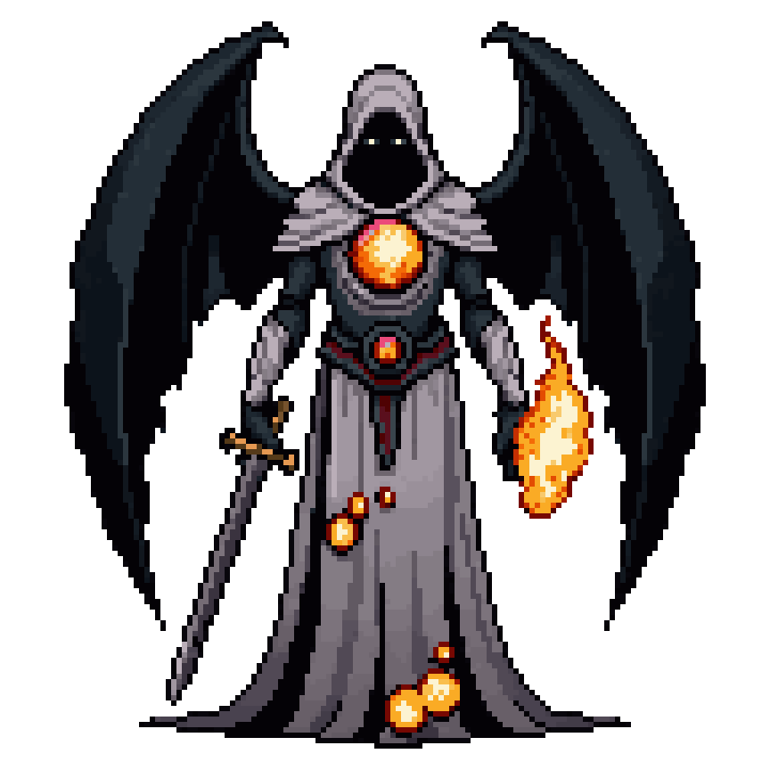
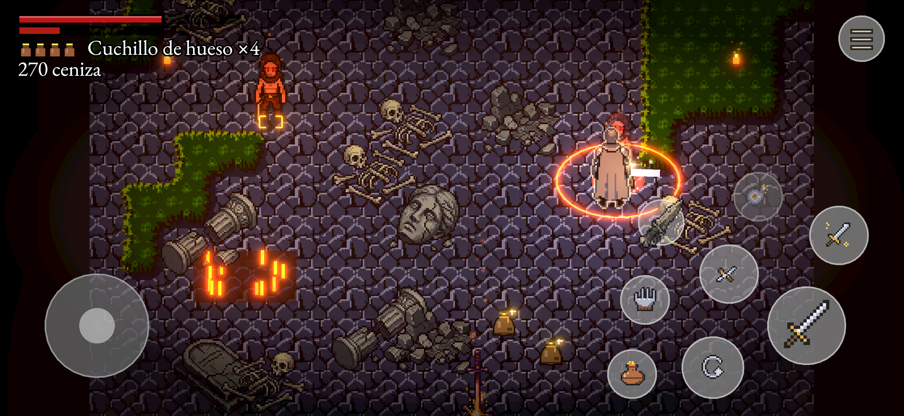
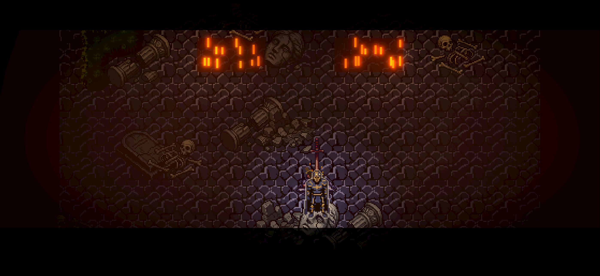
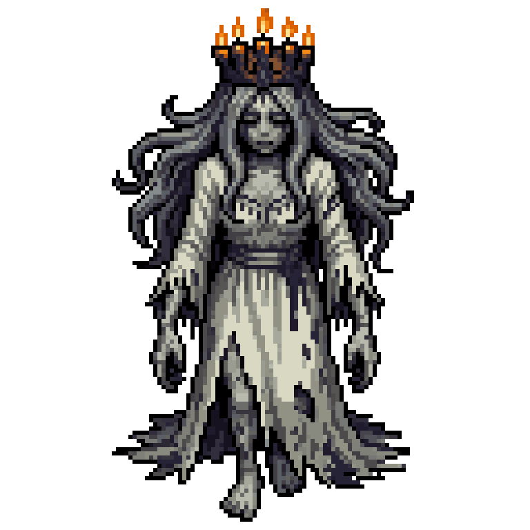

Libro I · Lore y mundo
«Desde entonces nadie duerme en Hondavela. El sueño que nadie sueña se pudre en el pecho y se vuelve ceniza.»
— Narración del prólogo

Advertencia al lector
Este libro reúne lo que se sabe de Hondavela, y también lo que se teme. Casi todo está sacado de las palabras del propio juego: el prólogo, las descripciones de los objetos, las inscripciones de los muros, lo que dicen los vivos y lo que gimen los muertos. Cuando hay un hueco y lo rellenamos, lo decimos con la fórmula «Conjetura de los veladores». Lo demás es lo que Hondavela dice de sí misma.
Lo que desvela la trama está guardado en bloques como este:
Las armas, los escudos, los amuletos y los objetos tienen su propio libro, el Libro II · Arsenal. Los personajes, el bestiario, los jefes y la guía de juego están en el Libro III. La cronología dibujada, las casas, los lazos entre personajes y el atlas están en el Libro I·b · Crónica y atlas. Aquí se habla del mundo.
I. Hondavela
«En la Era del Sueño, Hondavela dormía. Cada noche el reino cerraba los ojos con su reina, la Durmiente, y ella soñaba por todos.»
El reino de las campanas y las lámparas
Hondavela fue un reino de campanas y lámparas. Sus bosques no daban fruta, daban luz: los árboles de lámpara se talaban para alumbrar las alcobas, y los niños trepaban a ellos a robar aceite. Sus torres no daban la hora, daban el sueño: las campanas llamaban a dormir, a velar y a enterrar.
Gobernaba la Casa del Párpado, orden y dinastía a la vez, que guardaba el sueño de todos. Su blasón era un ojo cerrado sobre campo de ceniza. Sus espadas llevaban el mismo ojo grabado en la empuñadura, porque sus herreros creían que bastaba con cerrar los ojos.
La Durmiente y el Lecho
Hondavela se sostenía sobre un trato: un solo ser sueña por todos. Esa era la Durmiente, reina y sacerdotisa, tendida en el Lecho bajo la catedral y cubierta por el Velo de Cera. Cuando ella cerraba los ojos, el reino cerraba los suyos.
«El sueño... no se suelta... se entrega.»
El Lecho se cansa. Por eso el sueño pasaba de una Durmiente a la siguiente, de generación en generación. Ese turno, el más alto y el más pesado del reino, es lo que se llama el Relevo.
Las piras y las velas
«Pero ningún sueño es gratis.»
Algunos nacían sin poder dormir. La Casa los llamaba velas. Para que la Durmiente no despertara, se encendían piras, y las piras se alimentaban de velas. Los encargados de atizarlas eran los Veladores.
Los Veladores criaban perros para olfatear a quien fingía dormir. Llevaban al cuello una vasija de barro con ceniza tibia («para el frío») y al cinto un cuchillo de hueso para cortar mechas. Tenían prohibido dormir junto a las piras. Muchos no lo necesitaron nunca.
Una plañidera lloraba en público por cada vela, y en el Barrio alguien llevaba la cuenta en un libro forrado de piel. Al margen, con otra letra, se repite una frase: «la hoguera no mejoró».
El Ocaso Quieto
«Una noche, la Durmiente olió el humo. Supo de qué estaba hecho su descanso y cerró los ojos para no verlo más. El cielo se detuvo a medio crepúsculo.»
Desde esa noche el cielo de Hondavela está clavado en un atardecer que no avanza: el Ocaso Quieto. Las campanas tocan a todas horas aunque no queden campaneros. Nadie ha vuelto a dormir.
La Ceniza
El sueño que nadie sueña no desaparece. Se pudre en el pecho y se vuelve ceniza: un polvo gris, tibio, que pesa más de lo que debería.
La Ceniza lo es todo en Hondavela. Se comercia, se gasta y se ofrenda al fuego. Con ella se sube de rango. Al morir, el cuerpo la derrama en una mancha, y quien vuelve a tiempo la recoge. La Buhonera se ríe de que antes se pagara con monedas: «¿quién querría algo que no arde?»
Los Desvelados
«Olvidó su nombre, luego su rostro, luego la razón de estar en pie. Solo recuerda cómo golpear.»
La vigilia no mata, desgasta. Primero se olvidan los nombres, luego los rostros y al final el motivo de seguir de pie. Quien llega al fondo es un Desvelado: un cuerpo vaciado que sigue caminando y golpeando por costumbre, con los ojos secos y abiertos de par en par.
Los Desvelados no odian al Insomne. Lo atacan porque todavía recuerda.
Las hogueras
Las hogueras se encienden con Ceniza ajena. Junto a ellas el cuerpo cree dormir durante un instante. No es sueño, es su eco:
«No era sueño: era el recuerdo del sueño, como el olor del pan en una casa vacía. Me bastó para levantarme.»
Encender una hoguera y descansar en ella son cosas distintas. Encenderla la convierte en punto de regreso y en destino de viaje. Descansar en ella cura y devuelve el calor a la Vasija, pero los muertos de la zona se levantan con quien descansa, como si todos compartieran un mismo párpado.
La Vasija de Ceniza
«Vasija de barro de las hogueras, con ceniza que aún no se ha enfriado del todo. Beber su calor cierra las heridas y aplaza el cansancio. Se vuelve a llenar al descansar junto al fuego. Sabe a nana olvidada.»
Los Veladores enterraban a sus muertos con la vasija rota, para que no bebieran más. Con esquirlas de esas vasijas se ensancha la propia, y con huesos de Velador quemados en la hoguera se espesa su ceniza.
Nota del archivero. Los primeros papeles del mundo la llaman Frasco de Ascua: una brasa de hoguera dentro de cristal. En el juego es la Vasija de Ceniza y es de barro. Este libro sigue al juego.
El Insomne
«Tú encendías las piras, Velador. Y siempre fuiste una de ellas. No puedes morir, porque morir es dormir... y eso se te niega. Levántate, Insomne. La Durmiente espera su relevo.»
El protagonista es un Insomne: muere y vuelve sin perder del todo la cordura. Fue Velador, y atizaba las piras donde ardían los que eran como él. La noche del Ocaso Quieto dejó de fingir que dormía.
Nunca se le ve la cara, porque su yelmo solo tiene una ranura. Cuando cae, la hoguera lo recompone con Ceniza ajena. Él también pierde cosas al morir, aunque sean pequeñas: lleva un diario y, si muere demasiadas veces sin descansar, los recuerdos se le emborronan.
II. Las gentes de Hondavela
Antes de levantarse, el Insomne elige de dónde viene. Estas son las estirpes y los oficios del reino tal como los recuerda el juego.
Estirpes
| Estirpe | Lo que se cuenta de ellos |
|---|---|
| Hondavelano llano | Gente sin oficio que veló porque no quedaba otra cosa que hacer. |
| Sangre del Párpado | Primos lejanos de la Durmiente: duermen con un ojo y pelean con el otro. |
| Cereño | Fundidores del Horno, medio cera de tanto mirar el crisol. |
| Charqueño | Barqueros de la Cisterna, que aprendieron a no hundirse. |
| Enterrado | La Casa los enterró vivos; salieron arañando, con hambre. |
Orígenes
| Origen | Lo que fue |
|---|---|
| Caballero del Párpado | Juró velar el sueño de la Durmiente y ahora vela su ausencia. |
| Guerrero | Taló los bosques de lámparas cuando aún se dormía en Hondavela. |
| Ladrón | Robaba en las casas mientras sus dueños dormían. Ya nadie duerme. |
| Lancero | Guardó las murallas en el turno de noche, el que nunca terminó. |
| Bárbaro | Bajó de las montañas cuando dejó de soñar con ellas. |
| Paria | Nadie recuerda su nombre, ni siquiera él. Durmió en la calle hasta que no hubo sueño. |

III. Cronología críptica
Nadie en Hondavela escribe fechas. Lo que sigue está reconstruido con objetos, inscripciones y las palabras de los muertos. Cada entrada lleva su grado de certeza:
- Certeza: lo dice el juego con todas las letras.
- Indicio: varios textos apuntan hacia ello, pero ninguno lo afirma.
- Teoría de los veladores: conjetura nuestra, razonable, que nada confirma.
| Época | Suceso | Grado |
|---|---|---|
| La primera noche | Se tiende la primera Durmiente en el Lecho. Un custodio lleva una antorcha encendida hasta el Lecho y le piden que no la suelte nunca. Ese fuego es «el primer fuego». | Certeza (Alado de Hollín) |
| De la primera pira se toman las brasas que los Veladores llevarán en relicarios. | Certeza (Brasa de Velador) | |
| La primera hoguera se encendió con algo que la Casa no quiso registrar. Hay hogueras que, de cerca, susurran nanas. | Indicio | |
| La Era del Sueño | Hondavela duerme. Una Durmiente releva a otra. Se talan los árboles de lámpara, las campanas tocan a dormir y la Guardia del Relevo monta turnos en la muralla. | Certeza |
| Se descubre que el sueño de la Durmiente necesita piras y que las piras necesitan velas. Empiezan las quemas de Insomnes en el Barrio de los Veladores. | Certeza (prólogo) | |
| En el Horno de Velas a los Insomnes no se los quema: se los funde. | Certeza (inscripciones del Barrio y del Horno) | |
| Las plañideras lloran en público por cada vela. | Certeza | |
| Algunos Insomnes se tiran a las charcas para ver si el agua los duerme. Los sacan al amanecer con los ojos abiertos. | Certeza (Diario) | |
| Odo entierra vivos a los Insomnes, convencido de que a oscuras dormirán. | Certeza | |
| El protagonista sirve como Velador y oculta que tampoco puede dormir. | Certeza (prólogo; el resto, en el Diario) | |
| En las Actas de la Pira se apunta cuarenta veces la misma frase: «No mejoró». Las piras nunca sirvieron de nada. | Certeza (Actas de la Pira) | |
| La noche del humo | La Durmiente huele el humo, comprende de qué está hecho su descanso y cierra los ojos para no verlo. Cae el Ocaso Quieto. | Certeza |
| La Durmiente queda a medio camino, ni despierta ni dormida: el sueño de un reino no se suelta, se entrega, y no lo entregó. | Indicio (sus propias palabras); certeza en los papeles de diseño | |
| Esa misma noche el Insomne deja de fingir que dormía. Le tocaba la guardia y no fue. | Certeza (Diario, «El relevo que no llegó») | |
| Los primeros días del Ocaso | Las campanas empiezan a sonar solas. El campanero mayor sube a callarlas y aparece colgado de su soga, tocando todavía con los pies. | Certeza |
| El Alquimista del Relevo se encierra en su laboratorio para destilar un fuego que no se apague. Entrega la llave a la guardia del adarve. No vuelve a subir. | Certeza | |
| La Guardia del Relevo baja a sus nichos con el escudo puesto, «por si hacía falta». Su Capitán baja a contarlos por última vez y se queda contando. | Certeza | |
| El agua de la Cisterna deja de sacarse. Sube. Nadie sube con ella. | Certeza | |
| El largo Ocaso | Ser Aldric espera en el Túmulo a su relevo durante cuarenta años. | Certeza |
| Los vecinos se vacían y se convierten en Desvelados. Las arañas del Desván envuelven a los Veladores «para que no se enfríen». | Certeza | |
| Ilse toca las campanas del Campanario Hendido hasta tener las manos en carne viva. | Certeza | |
| Ahora | El Insomne despierta en la pira apagada del Velador y sale al Camposanto. | Certeza |
| Después | Si el ciclo vuelve a empezar, «alguien se despierta en el Camposanto. Otra vez.» Las Sombras que invaden vienen «de otro ciclo». | Certeza (ciclos) / Teoría de los veladores (que siempre sea el mismo Insomne) |
Conjetura de los veladores. Los «cuarenta» se repiten demasiado: cuarenta años esperó Aldric, cuarenta años lloró la Plañidera según los papeles del Párpado, cuarenta velas contó Lumbre y cuarenta veces se escribió «No mejoró». Puede que no sea casualidad. Puede que el Ocaso dure exactamente lo que duró la pira.
IV. Las regiones
Las regiones van en el orden en que suele recorrerlas un Insomne que no tiene prisa. Hondavela no obliga a seguirlo: desde el Camposanto salen caminos hacia abajo (Osario), hacia arriba (Campanario) y hacia el este (Barrio).
El plano esquemático de las zonas, con sus caminos y lo que pide cada paso, está en el Libro I·b · Crónica y atlas; los mapas de cada zona, en el Libro IV.
Prólogo · La Pira del Velador
«La pira se apagó contigo dentro. Sal de las brasas.»
El Insomne despierta entre las brasas de una pira apagada, en el lugar donde se adiestraba a los novicios. Hay cinco estancias en fila: la Pira, la Galería de las Saeteras, el Patio del Turno (donde un viejo Centinela todavía corrige la guardia: «¡Novicio! Escudo arriba. Ser Aldric no perdona un turno abierto.»), la Capilla de la Ceniza, con la primera hoguera, y el Atrio del Atizador.
Hasta descansar en la Capilla la muerte no es real. Después lo es: «Los muertos se levantan contigo. Desde ahora, caer es de verdad.»
En el Atrio sigue el Atizador, que no dejó apagarse la pira nunca. Cuando ya no quedó a quién quemar, siguió atizándose a sí mismo. «Una vela fuera del fuego. Vuelve a la pira, vela.»
1 · Camposanto del Relevo
«El Camposanto del Relevo. Alguien espera un relevo bajo el túmulo.»

Ambiente
Es el barrio y cementerio a los pies de la muralla, donde vivía y se enterraba la guardia de noche. Las tumbas se apilan en terrazas y los muertos no se quedan dentro. Todo es piedra gris ceniza y musgo enfermo. Las campanas del Campanario suenan a ratos, el viento sopla sobre el adarve y fuera de la vista se oyen palas que cavan.
Lugares
- La plaza de la Hoguera del Relevo: es el corazón de la región. Junto al fuego yace un Velador muerto con su relicario, y la Buhonera vende lo que encuentra en los muertos.
- El Adarve: pasarelas sobre la muralla norte, con saeteras que destellan antes de disparar y Ballesteros de la Guardia que siguen tensando la ballesta «por si alguien intenta salir del Camposanto. O entrar». Hay una escala de cuerda que se recogía al anochecer y que una patada deja abajo para siempre.
- Las Terrazas de tumbas: cuidado con las Losas de Duelo. «Las losas limpias no son piedad: alguien barre el polvo que levanta la campana al caer.»
- La Fosa Común: aquí cava Odo el Sepulturero. En la tierra hay huecos. «Donde no crece el musgo, la tierra está hueca. Odo nunca pisaba allí.»
- La Capilla Ciega y el Callejón de los Veladores: portones que se desatrancan desde dentro. «Quien cae aquí, sale por su propio pie.»
- La Terraza de los Ataúdes: el puzle del contrapeso. Tres ataúdes de peso distinto y un plato que pide la cuenta justa: «Cuatro muescas en el plato. Ni una menos: el ataúd no baja. Ni una más: la cadena de Odo saltó con cinco y aplastó a tres Veladores.» El ascensor-ataúd baja al Osario por el Pozo de Cera.
- El Bosque de las Lámparas Taladas: farolas de vigilia cortadas como árboles. Es el bosque de los recuerdos de infancia del Insomne, aunque ahora tiene tocones y perros.
- La Hondonada de Grumo y el Laboratorio del Alquimista: entre alambiques, jaulas, un atanor y un círculo trazado en el suelo vive algo que se destiló a sí mismo. Por el camino se arrastran los Cenicientos, «lo que salió de la retorta antes del Precipitado».
Hogueras
| Hoguera | Dónde |
|---|---|
| Camposanto · Hoguera del Relevo | La plaza central. |
| Camposanto · Claro de las Lámparas | A medio camino entre la plaza y la Hondonada, en el bosque talado. |
Historia
«Bajo las lámparas taladas, el Alquimista cerró su laboratorio y dio la llave a la guardia del adarve. Lo que sale de allí arrastrándose ya no es él.»
La Llave del Laboratorio espera en el extremo oeste del adarve, entre saeteras y ballesteros. «Nadie bajó. Él tampoco volvió a subir.»
Secretos
- Fosas ocultas: el suelo sin musgo se hunde y lleva a la Galería de Cráneos del Osario.
- Ataúdes de pie: algunos esconden un Centinela.
- Arañas en el Camposanto: bajaron del Desván Tejido. Son la primera señal de que hay algo arriba.
- La inscripción del fondo de la Hondonada: «Bajo el laboratorio duermen los de la Guardia del Relevo, en sus nichos. Su Capitán aún guarda el sello de su turno. El Lecho reconoce los sellos de los que no durmieron.» Es la primera mención de los sellos.
Conexiones
| Hacia | Por |
|---|---|
| Osario | Las escaleras del Camposanto, o el ascensor-ataúd del Pozo de Cera (necesita el contrapeso resuelto y que se suelte la traba de abajo, tras el Rey del Túmulo). |
| Campanario Hendido | La subida desde el adarve. |
| Barrio de los Veladores | El camino del borde este. |
| Criptas de la Guardia | Al fondo de la Hondonada, bajo el laboratorio. |
2 · Osario
«El Rey espera su relevo de espaldas al muro.»

Ambiente
Bajo el cementerio hay silencio, goteo y huesos. Es una red de galerías donde la Casa del Párpado guardaba a sus muertos y a sus juramentos. Más abajo todavía queda el agua, y más arriba, la catedral.
Lugares
- La Galería de Cráneos: una cueva larga e irregular, con ataúdes de pie a lo largo del muro norte. Aquí cae quien pisa una fosa del Camposanto.
- La Sala de las Siete Velas: siete braseros, cada uno con un rostro, y una puerta con siete ojos que se abren con cada acierto. «Siete rostros, siete vigilias. Despierta primero al que más duerme; el último no tiene párpados.»
- La Cripta del Túmulo: aquí espera el Rey del Túmulo, de espaldas al muro, entre sarcófagos.
- El Pozo de Cera: cámara de paso con guardia entre la cripta y la Capilla Mayor, y el otro extremo del ascensor-ataúd.
- La Capilla Mayor: una nave circular con bancos en dos filas. Al fondo, la Plañidera Mayor, y detrás de ella la escalera al Dormitorio Mayor, sellada con cera.
Hogueras
| Hoguera | Dónde |
|---|---|
| Osario · Umbral de los Huesos | A la entrada, junto a Anselmo el Fundidor. |
| Osario · Túmulo del Rey | Se enciende al vencer al Rey del Túmulo, entre su cripta y la Capilla Mayor. |
Historia
«En las criptas, los que juraron velar aún montan guardia. Ser Aldric espera un relevo que nunca llegó. La Plañidera Mayor llora por cada vela, cosida a su campana.»
Ser Aldric de la Guardia Perpetua fue el último capitán de la guardia de noche. Cuando no llegó su relevo, se sentó en el túmulo a esperarlo. Era severo: colgó al último centinela que se durmió en su turno y guardó bajo el yelmo una gota de cera que había recogido de la mejilla del ahorcado.
La Plañidera Mayor lloró en público por cada vela de la catedral. «Lloró por cada vela de Hondavela. Nadie lloró por ella.»
Secretos
- El Badajo Perdido, en un cadáver: «Alguien lo arrancó y lo bajó a los muertos para que la torre callara.» Ilse lo busca.
- Las Actas de la Pira: el registro de las quemas del Barrio. «Alguien debería saber lo que dice. O nadie.» Quien las lea decide el destino de la Hermana Lumbre.
- Anselmo el Fundidor, que fundió las rejas de los dormitorios cuando la Durmiente aún dormía. Con las esquirlas de esas rejas refunde armas.
Conexiones
| Hacia | Por |
|---|---|
| Camposanto | Las escaleras de subida, o el ascensor-ataúd. |
| Cisterna de los Ahogados | Una bajada al agua. «Abajo el agua no corre.» |
| Dormitorio Mayor | La escalera del fondo de la Capilla Mayor, que solo se abre tras vencer a la Plañidera. |
3 · Cisterna de los Ahogados
«Aquí bajaban el agua para las piras. Cuando se dejó de quemar, se dejó de sacar. Subió. Nadie subió con ella.»
Ambiente
Es un templo inundado bajo el Osario. La nave es casi toda agua negra y quieta, con islas de piedra y una pasarela en zigzag marcada con velas votivas: el camino seco se lee de lejos. El agua frena a los vivos, pero no a los Ahogados, que «solo salen cuando alguien chapotea cerca, buscando con qué hundirse».
Lugares
- El atrio de la escalinata, con la hoguera.
- La nave inundada, con sus islas y la pasarela de piedra.
- Una capilla lateral, con una ofrenda de Ceniza de vela.
- La Pila de la Madre: tras la niebla hay una charca central y, en ella, alguien que canta.
Hogueras
| Hoguera | Dónde |
|---|---|
| Cisterna · Escalinata Ahogada | En el atrio, al pie de la bajada. |
Historia
«Algunos Insomnes se tiraban a las charcas para ver si el agua los dormía. Los sacábamos al amanecer, con los ojos abiertos. El agua tampoco quería sus sueños.»
El agua, se decía, no deja oír las campanas. Los que se tumbaron en ella no las oyen, pero tampoco oyen nada más. El único objeto que alguna vez los sacó de allí fue un garfio de cisterna, y los Ahogados todavía lo temen.
Conexiones
| Hacia | Por |
|---|---|
| Osario | La subida del atrio. |
4 · Criptas de la Guardia
«Aquí enterraban de pie a la guardia del relevo, con el escudo puesto. Por si hacía falta.»
Ambiente
Bajo el Laboratorio del Alquimista están los nichos de la Guardia del Relevo. Es un cementerio militar: escudos apilados, ataúdes de pie y la cruz de turno pintada y repintada en cada pavés. Los muertos de aquí no duermen, esperan.
Lugares
- La Antecámara de la Guardia, con su hoguera.
- La Galería de los Nichos: ataúdes de pie a lo largo del muro, algunos ocupados, y Guardias del Relevo que paran los golpes de frente. «Los de pie no duermen: esperan. No les des la espalda... ni dejes de buscar la suya.»
- El Osario de los Escudos: un ballestero tras los escudos apilados y un portón-atajo a la antecámara.
- La Capilla del Juramento: un Aparecido, soldado que volvió años tarde y encontró la guardia vacía, «ahora la monta él, contra cualquiera». En el altar está el Sello del Relevo: «velaré hasta que me releven». «Nadie juró qué pasaría si nadie venía.»
- La Sala de Armas: la niebla, el Capitán y su hoguera.
Hogueras
| Hoguera | Dónde |
|---|---|
| Criptas · Antecámara de la Guardia | A la llegada desde el Camposanto. |
| Criptas · Sala de Armas | Tras vencer al Capitán. |
Historia
«El Capitán no baja el escudo para mirarte, solo para golpear.»
Conexiones
| Hacia | Por |
|---|---|
| Camposanto (Laboratorio) | La subida de la antecámara. |
5 · Campanario Hendido
«Desde aquí se ve el Dormitorio Mayor. La campana grande calla: le falta el badajo.»
Ambiente
Es una torre partida que sube por pisos. Las campanas siguen tocando sin campanero y alguien quiere que nadie duerma. Arriba, por las vigas, algo teje.
Lugares
- El Pie de la Torre, con la hoguera, un muro que vibra y una Rezadora cuyos rezos arden despacio.
- El primer piso, las Tres Campanas: una campana con una calavera, otra con un ojo y otra con una cuna. «Primero se dobla por los muertos, luego se llama a los que velan, y al final se canta la nana.»
- El segundo piso: la niebla y el Campanero Ahorcado.
- La cúspide: la hoguera de las Tres Campanas y Ilse, la Campanera. Una escalera sigue hacia arriba, hacia el Desván.
Hogueras
| Hoguera | Dónde |
|---|---|
| Campanario · Pie de la Torre | En la entrada, desde el adarve. |
| Campanario · Las Tres Campanas | En la cúspide, tras el Campanero. |
Historia
«Cuando las campanas empezaron a sonar solas, el campanero mayor subió a la torre a callarlas. Lo encontramos colgado de su propia soga, tocando todavía con los pies.»
El Campanero Ahorcado se ató a la viga y al cuello con la misma cuerda, trenzada con cabello: «no quería volver a tocar a muerto por nadie». «Cada campanada era un nombre. Me até a la viga para no tener que tocar el tuyo.»
Ilse es una niña que toca a todas horas. Cree que, si para, los sueños volverán y se comerán a la gente. «No te duermas. ¿Lo oyes? Mientras suene, no viene.»
Secretos
- El muro que vibra del Pie de la Torre se abre con el badajo. Detrás hay una cámara con un Eco de campana: «Al agitarla no suena. Se oye después, cuando ya nadie la mueve.»
- Una Campana rota en el piso de las campanas, arrancada de la torre por el Campanero.
- La inscripción de la cúspide: «Más arriba de la última campana, algo teje. El Alado de Hollín custodia su sello entre las vigas.»
Conexiones
| Hacia | Por |
|---|---|
| Camposanto | La bajada al adarve. |
| Desván Tejido | La escalera de la cúspide. |
6 · Desván Tejido
«Aquí arriba guardaban al custodio del primer fuego. Le trajeron la antorcha encendida y le pidieron que no la soltara nunca.»

Ambiente
Es un ático sobre la torre, lleno de seda. Las Tejedoras cuelgan del techo y caen sobre quien pasa. Las telarañas del suelo enredan los pies. En las vigas hay Veladores enteros envueltos en capullos, todavía calientes por dentro. «Las arañas no lo mataron: lo guardaron, como se guarda una vela para la noche siguiente.»
Lugares
- La Galería de los Capullos: pilares, Tejedoras colgadas y Veladores envueltos.
- El Nido: Arañuelas y una Tejedora madre sobre el suelo tejido. «Lo que se mueve no está dormido.»
- Las Vigas: una Rezadora, una Tejedora y la escala-atajo que baja al rellano.
- La Antecapilla y la Capilla del Alado.
Hogueras
| Hoguera | Dónde |
|---|---|
| Desván · Rellano de las Vigas | A la llegada desde la cúspide. |
| Desván · Capilla del Alado | Tras el custodio. |
Historia
«Mira hacia arriba antes de pasar: lo que cuelga de las vigas también espera.»
Nota del archivero. La idea y el dibujo del Alado de Hollín son del hijo del autor.
Conexiones
| Hacia | Por |
|---|---|
| Campanario Hendido | La bajada a la cúspide. |
7 · Barrio de los Veladores
«Aquí ardían las velas. El suelo aún recuerda: donde brilla, quema.»

Ambiente
Es el barrio de oficio de los que atizaban. Hay piras en las plazas, el suelo arde a parches y por el mercado caminan las Velas Encendidas, Insomnes que la pira no terminó de consumir: «Abraza a quien se acerca: es el único calor que le queda.» Los Perros de Hueso rastrean de noche, como cuando los soltaban para encontrar a los que no dormían.
Lugares
- La Plaza: la hoguera y la Hermana Lumbre, que la aviva con un fuelle de cuero demasiado fino.
- La Calle Mayor, con el suelo en llamas.
- El Mercado: piras, Velas Encendidas y perros.
- El Callejón norte y su verja-atajo, que solo se abre desde el lado de la fosa. «Quien vuelve de allí, vuelve rápido.»
- La Fosa de Odo: la fosa que tiene su nombre.
- El Patio de la Perrera: piras apagadas y el Sabueso de las Piras.
- La boca del Horno, al sur de la perrera, «de donde salía el humo de todas las piras del Barrio».
Hogueras
| Hoguera | Dónde |
|---|---|
| Barrio · Pira de Lumbre | En la plaza, con la Hermana Lumbre. |
| Barrio · Fosa de Odo | Junto a la fosa, al fondo de la bajada. |
Historia
«Aquí quemábamos a los que no podían dormir. Yo atizaba. Tú también, Velador: te he visto las manos.»
La Hermana Lumbre atizó con el Insomne la misma pira. Ella contaba las velas en voz baja. «Si no las cuentas, me decía, luego no sabes a cuántos tienes que pedir perdón.»
El Sabueso de las Piras iba atado a la pira para olfatear a los que fingían dormir. «El Sabueso nunca dejó de buscar.» El Insomne nunca fue descubierto porque se revolcaba en la ceniza de la pira.
Conexiones
| Hacia | Por |
|---|---|
| Camposanto | El camino de vuelta, por el oeste. |
| Horno de Velas | El agujero bajo la Perrera. |
8 · Horno de Velas
«HORNO DE VELAS. Lo que entra Insomne sale vela. Lo que sale vela, alumbra. Lo que alumbra, no pregunta.»

Ambiente
Es la fundición bajo el Barrio. «Allí abajo no se quemaba a nadie: allí se los fundía.» Hay canales de cera ardiente que corren de molde en molde, hileras de moldes de pie y mechas colgando del techo como lámparas. Las Velas Vivas son Insomnes a medio fundir con la mecha todavía ardiendo en la cabeza.
Lugares
- La Antecámara, con la hoguera.
- La Sala de los Moldes: pilares-molde y canales que se cruzan por donde asoma la piedra, «nunca rodando por encima».
- La Galería de las Mechas: mechas encendidas, un Aparecido y los perros de la fundición.
- La verja del pasadizo, un atajo que deja la antecámara a un paso.
- El Crisol: la niebla, el Cerero y su hoguera.
Hogueras
| Hoguera | Dónde |
|---|---|
| Horno de Velas · Antecámara | A la llegada desde el Barrio. |
| Horno de Velas · El Crisol | Tras vencer al Cerero. |
Historia
«Bajé una vez al Horno a llevar un encargo. El Cerero me dio una vela pequeña, tibia todavía, con una cara apenas marcada en la cera. "Para tu casa", me dijo. La puse en la ventana. Ardió tres noches.»
Conexiones
| Hacia | Por |
|---|---|
| Barrio de los Veladores | La subida a la Perrera. |
9 · Dormitorio Mayor
«Aquí dormía Hondavela entera. El Lecho está al fondo. El Relevo, también.»

Ambiente
Es la catedral del prólogo. Una nave larga con pilares, bancos y la luz fría de los vitrales, que sube desde la Capilla Mayor del Osario por una escalera sellada con cera. Al pie del ábside espera una figura con un yelmo que el Insomne conoce: «Lleva tu mismo yelmo, tu misma ranura. Quizá es lo que queda de ti si fallas.» Al fondo, tras la niebla, está el Lecho.
Hogueras
| Hoguera | Dónde |
|---|---|
| Dormitorio Mayor · La Nave | A la entrada. Es la última hoguera de Hondavela. |
Historia
«Duerme y sueña pesadillas. Cuando despierte, no la mires de frente: su mirada barre la nave.»
Conexiones
| Hacia | Por |
|---|---|
| Osario (Capilla Mayor) | La escalera de bajada. |
Resumen de hogueras
| Región | Hogueras |
|---|---|
| La Pira del Velador | Capilla de la Ceniza (no admite viajes) |
| Camposanto del Relevo | Hoguera del Relevo · Claro de las Lámparas |
| Osario | Umbral de los Huesos · Túmulo del Rey |
| Cisterna de los Ahogados | Escalinata Ahogada |
| Criptas de la Guardia | Antecámara de la Guardia · Sala de Armas |
| Campanario Hendido | Pie de la Torre · Las Tres Campanas |
| Desván Tejido | Rellano de las Vigas · Capilla del Alado |
| Barrio de los Veladores | Pira de Lumbre · Fosa de Odo |
| Horno de Velas | Antecámara · El Crisol |
| Dormitorio Mayor | La Nave |
V. El Diario de Velador
«Algo se te escapa de la memoria.»
El Insomne lleva un diario con doce recuerdos. Se recuperan al vivir lo que los despierta: un jefe vencido, una misión cumplida, una hoguera. Cada tres muertes sin descansar, uno se emborrona y el texto se tacha. Un recuerdo emborronado se puede recuperar en la hoguera a cambio de Ceniza, así que el Insomne tiene que elegir entre hacerse más fuerte o recordar.
Al final, el juego cuenta cuántos recuerdos conservaba quien se tendió en el Lecho.
| # | Recuerdo | Se despierta con |
|---|---|---|
| 1 | La primera hoguera | Descansar en una hoguera |
| 2 | El relevo que no llegó | Vencer al Rey del Túmulo |
| 3 | Los bosques de lámparas | Vencer al Precipitado de la Retorta |
| 4 | Cuarenta velas | Avivar la hoguera de Lumbre con tres Ceras de Vigilia |
| 5 | Las campanas | Vencer al Campanero Ahorcado |
| 6 | La nana | Cumplir la petición de Ilse |
| 7 | Los perros de la pira | Vencer al Sabueso de las Piras |
| 8 | La losa sin nombre | Cumplir la petición de Odo |
| 9 | El agua negra | Vencer a la Madre de las Charcas |
| 10 | El llanto | Vencer a la Plañidera Mayor |
| 11 | El horno | Vencer al Cerero Mayor |
| 12 | Mi hermana | Vencer a la Durmiente |
VI. El Lecho: los tres finales
«El Velo de Cera está tibio. Ysolde ya no sueña. Alguien tiene que hacerlo, o nadie.»
Tras vencer a la Durmiente, el Insomne queda ante el Lecho. Siempre hay dos caminos posibles, y a veces un tercero.
| Final | Botón | Requisitos |
|---|---|---|
| Relevo | «Tenderte en el Lecho» | Ninguno. |
| Desvelo | «Romper el Lecho» | Ninguno. |
| Vela | (oculto) | Véase el bloque siguiente. |
Termine como termine, después de los créditos el ciclo vuelve a empezar: «Alguien se despierta en el Camposanto. Otra vez.» El Insomne conserva su cuerpo y su equipo, y los muertos recuerdan más fuerte.
Conjetura de los veladores. Ninguno de los tres finales es feliz. El Relevo salva al reino a costa del nombre del Insomne. El Desvelo salva a las velas a costa del sueño de todos. La Vela no salva a nadie para siempre: solo cambia el atizador por un cuidador. Es el único final en que la palabra «velar» vuelve a significar lo que significaba antes de las piras.
VII. Misterios sin cerrar
Hondavela no responde a todo. Estas preguntas siguen abiertas, y este libro no las cierra.
- ¿Robó Ysolde el sueño o lo protege? Algunos textos hablan del «sueño robado de Hondavela». Otros dicen que la Durmiente sueña por todos y que, si suelta el sueño sin entregarlo, se perderá.
- ¿De quién es la Ceniza de la primera hoguera? La Casa no lo registró, el Alado llevaba la antorcha y hay hogueras que, de cerca, susurran nanas.
- ¿Por qué vuelve el Insomne? Cada muerte le quita algo pequeño. Quizá no regresa del todo. Quizá algo regresa en su lugar. La Sombra del Dormitorio lleva su yelmo y su nombre grabado por dentro: «No preguntes de qué ciclo.»
- ¿Quién toca las campanas? Siguen sonando aunque no queden campaneros. Algo quiere que nadie duerma.
- ¿Qué decía el relicario? La Brasa de Velador lleva un nombre grabado, y es el del Insomne. ¿Quién lo grabó, y cuándo?
- ¿Dónde terminaba Hondavela? Alguien lo veía desde lo alto de los árboles de lámpara. Nunca lo dijo.
VIII. Glosario
| Término | Significado |
|---|---|
| Actas de la Pira | Registro encuadernado en piel de cada Insomne quemado en el Barrio: nombre, edad y hora. Al margen, cuarenta veces: «No mejoró». |
| Adarve | Las pasarelas sobre la muralla norte del Camposanto, con saeteras y Ballesteros. Allí quedó la Llave del Laboratorio. |
| Ahogado | Quien se tumbó en el agua de la Cisterna para no oír las campanas. No las oye; tampoco oye nada más. |
| Alquimista del Relevo | El que se encerró en su laboratorio bajo las lámparas taladas para destilar un fuego que no se apagara y dio la llave a la guardia del adarve. |
| Aparecido | Soldado del relevo que volvió por su cuenta, años tarde, y encontró la guardia vacía. Ahora la monta él, contra cualquiera. |
| Árbol de lámpara | Árbol de Hondavela que daba luz. Se talaba para alumbrar las alcobas. |
| Atizador | El Velador que no dejó apagarse nunca la pira de los novicios. Cuando no quedó a quién quemar, siguió atizándose a sí mismo. |
| Avivar | Encender más hondo una hoguera o el propio cuerpo con una Ascua viva. |
| Buhonera | Mercader que vende lo que encuentra en los muertos. «Tú haces lo mismo.» |
| Campanero | Quien tocaba a dormir, a velar y a enterrar. El campanero mayor subió a callar las campanas cuando sonaron solas y se quedó colgado de su soga. Ilse toca ahora. |
| Casa del Párpado | Orden y dinastía que custodiaba el sueño del reino. Su blasón es un ojo cerrado sobre campo de ceniza. |
| Ceniza | Lo que deja el sueño que nadie sueña al pudrirse en el pecho. Es moneda, experiencia y combustible. |
| Cerero | Fundidor del Horno de Velas: allí a las velas no se las quemaba, se las fundía. Los Cereños quedaron medio cera de tanto mirar el crisol. |
| Charqueño | Barquero de la Cisterna que aprendió a no hundirse. El agua y el pasto no lo frenan; arde como yesca. |
| Ciclo | La vuelta a empezar después del Lecho. «Alguien se despierta en el Camposanto. Otra vez.» |
| Desvelado | Quien se vació del todo por la vigilia. Sigue caminando y golpeando por costumbre. |
| Diario de Velador | Los doce recuerdos del Insomne, que se emborronan al morir demasiado. |
| Durmiente | La reina y sacerdotisa que soñaba por todos en el Lecho, de la Casa del Párpado. |
| Enterrado | Estirpe de los que la Casa enterró vivos y salieron arañando, con hambre. Odo creía que bajo tierra dormirían. |
| Era del Sueño | El tiempo anterior al Ocaso Quieto, cuando Hondavela dormía. En la cronología del Libro I·b, la Edad del Sueño. |
| Esquirla de reja | Hierro de las rejas que cerraban los dormitorios. Anselmo refunde armas con él. |
| Guardia del Relevo | Soldados de la muralla y del turno de noche que juraron velar hasta ser relevados. Enterrados de pie en las Criptas, con el escudo puesto. |
| Hondonada | La bajada del Camposanto, entre las lámparas taladas, donde el Alquimista levantó su laboratorio. Bajo él, las Criptas. |
| Hondavela | El reino. |
| Hoguera | El único descanso que queda. No es sueño, es el eco del sueño. Se enciende una vez y en ella se descansa muchas. |
| Insomne | Quien nace sin poder dormir. También el protagonista, que muere y vuelve. |
| Lecho | Donde yace la Durmiente, bajo la catedral del Dormitorio Mayor. |
| Ocaso Quieto | El crepúsculo detenido que cubre Hondavela desde la noche del humo. |
| Pesadilla | Lo que la Durmiente soñó por todos y no pudo retener. «No muerde: recuerda.» |
| Pira | Fuego alimentado con velas para que la Durmiente no despertara. |
| Plañidera | Quien lloraba en público por cada vela, por orden de la Casa, para que el pueblo viera un duelo y no un sacrificio. |
| Pozo de Cera | El hueco del ascensor-ataúd entre la Terraza de los Ataúdes del Camposanto y el Osario. Lo mueve un contrapeso de cuatro muescas. |
| Relevo | El turno de soñar por todos que pasa de una Durmiente a la siguiente. Por extensión, cualquier guardia que espera ser relevada. También es uno de los finales. |
| Sellos de los que no durmieron | Cuatro sellos guardados por la Madre de las Charcas, el Capitán del Relevo, el Alado de Hollín y el Cerero Mayor. El Lecho los reconoce. |
| Sombra del Insomne | Otro Insomne, de otro ciclo, que invade para quedarse con la Ceniza ajena. |
| Vasija de Ceniza | Vasija de barro con ceniza tibia de hoguera. Cura y se rellena al descansar. En los primeros papeles se llamaba Frasco de Ascua. |
| Vela | En boca de la Casa, un Insomne destinado a la pira. Las Velas Encendidas y las Velas Vivas son las que no terminaron de arder o de fundirse. |
| Velador | Quien atizaba las piras. El Insomne lo fue. |
| Velo de Cera | La sábana de cera que cubre a la Durmiente en el Lecho. |
«Gracias por velar.»
— Créditos de Vigilia de Ceniza